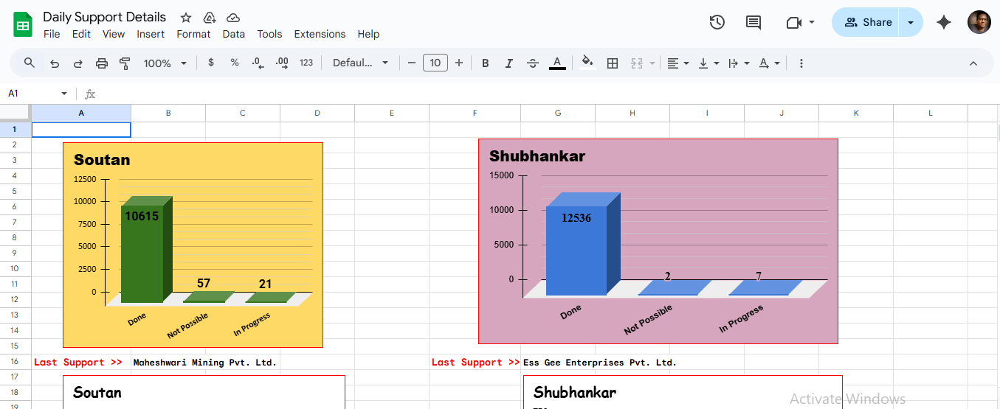
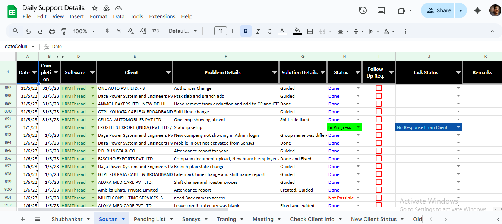

ACC Infotech CRM
A lightweight CRM solution developed entirely using Google Sheets, Google Forms, and Apps Script. Designed for ACC Infotech to manage leads, automate workflows, and send client communications without expensive software.
Features
- Lead capture via Google Forms directly into Sheets
- Automated email reminders and follow-ups using Apps Script + SMTP
- Dashboard with charts and KPIs built in Google Sheets
- Task assignment and tracking for sales team members
- Export client records and reports to PDF
Screenshots


Technologies Used
Google Sheets, Google Forms, Google Apps Script, Gmail SMTP
Challenges & Learnings
The challenge was to replicate CRM-like features inside Google’s ecosystem while keeping it simple for non-technical staff. Learned how to leverage Apps Script for automation and how to optimize Sheets for handling large datasets.